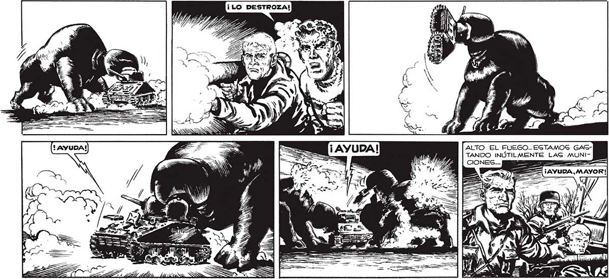
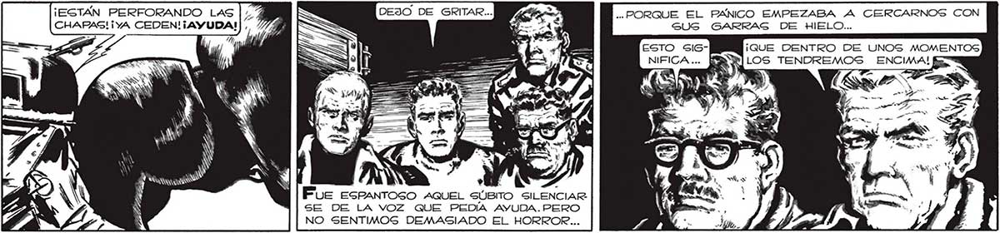

213 ALTO EL FUEGO... ESTAMOS GASTANDO INÚTILMENTE LAS MUNIAA ¡AYUDA, MAYOR! EZ KA Ñ A y ? AA 4 é y Bi ¡ESTÁN PERFORANDO LAS : Pe .. PORQUE EL PANICO EMPEZABA A CERCARNOS CON CHAPAS! ¡yA CEDEN!¡AYUDA! A É—.-10 SUS GARRAG DE HIELO... Ls sy Pue espanTOSO AQUEL SÚBITO SILENCIAR SE DE LA VOZ QUE PEDIA AYUDA. PERO NO SENTIMOG DEMASIADO EL HORROR... pen Ñ y NN : N A XA . = zx / 1 Ñ S y Ka y »UN A $ ;

